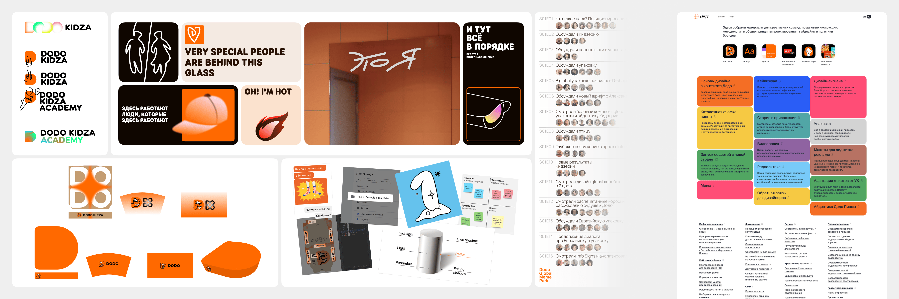
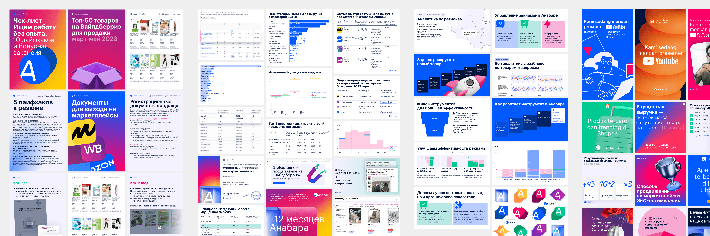
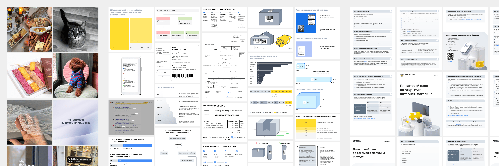

Мне 25. Занимаюсь дизайном 6 лет, с 2018. Могу быть полезен в дизайне сайтов, графиков, таблиц, схем для статей, оформлении соцсетей. Ещё есть опыт в создании афиш, статей, презентаций, чек-листов, КП, баннеров в вебе и в жизни.
Работаю удалённо, есть самозанятость.
Навыки
- Основной рабочий инструмент Фигма
- При необходимости могу открыть Фотошоп и Иллюстратор
- Ещё немного создавал лендинги в Редимаге и Тильде
- Знаком с фронтедом
- Генерирую в Стейбл Дифьюжн
- Рисую с Прокриейт
Летом 2021 закончил учиться на программиста, бакалавриат :) Но дизайн нравится больше, несколько лет занимался им на фрилансе, а потом пришел в крутые команды с прекрасными людьми. Кроме дизайна интересуюсь кинематографом, модой, искусством.
Хочу быть хорошим дизайнером, решать задачи, которые будут приносить пользу и бизнесу, и пользователям. Личные качества: внимание и дотошность к деталям, желание развиваться и совершенствоваться.
Опыт работы
2023…н.в.
Шифт — сайт для креативных команд Додо Бренда
Помогаю в поиске идей, референсов, смыслов для разных проектов. Собираю и готовлю изображения, видео, гифки. Верстаю гайды и спецпроекты.
2021…н.в.
Анабар — система аналитики и управления продажами на маркетплейсах
Отвечаю за графический дизайн, в интернетах и в реальности. Цифровой: баннеры в соцсети, для рекламы, презентации. Вёрстка статей в блог, редактирование страниц сайта. И даже немного изучаю и пытаюсь улучшить геткурс. Живой: визитки, стенды для выставок, стикеры, торты.
2021…2022
Бизнес-секреты — медиапроект для бизнеса от Банка Тинькофф (Т-Банк)
Создаю визуал для статей: схемы, таблицы, оформляю скрины и документы, готовлю обложки и шеринги. Иногда помогаю в других направлениях, например делаю чек-листы, гайды. Это как конвейер — поток задач, но конечно не без нюансов.
Редактор Олег написал отзыв о том как ему со мной работалось:
Когда я приношу какую-то задачу, ты никогда не пропадаешь и всегда все приносишь вовремя. А если задача сложная, то сначала приносишь макет. Я не помню случаев, когда я нервничал: «Где же Витя? Надо ему напомнить». Это подкупает.
Когда я иллюстрировал статью, я рисовал макеты в Фигме для тебя. Они всегда были далеки от визуального стиля Бизнес-секретов. Но если такое случалось, ты всегда находил альтернативу, которая подходила мне и стилю БС. Например, в статье про JTBD ты заменил смайлики на векторные иконки, сохранив смысл.
Минусы трудно найти. То, что мне не понравилось, относится, скорее, к процессам БС, чем к тебе. Например, мне бы хотелось, чтобы дизайнер помогал иллюстрировать статью и предлагал свои идеи. Но это невозможно, потому что у тебя было слишком много задач, а придумывание иллюстрации возложено на редактора.
2021

ЛинДизайн
Разные интересные задачи — дизайн сайтов, баннеров, блокнота.
2018…2021
Изучение дизайна, учёба в вузе, поиск себя и умных источников, разные задачки на фрилансе.
Курсы, электронные сертификаты, книги
- Прошёл курс А. Смагина «Эстетика в графиках», Сертификат
- Прошёл курс Школа сюжетной иллюстрации Насти Никсен
- Прочитал книгу А. Богачева «Графики, которые убеждают всех»
- Прочитал Электронную полку «Быстрый старт в искусстве»
- Прочитал все 6 книг: Учебники бюро
- ★ Прошёл онлайновый курс «Таблицы и прочие радости»
- Сертификат Подготовительные курсыв Школу Бюро Горбунова
- ★ Прочитал книгу Ж. Арутюнова «Сложный дизайнер»
- Прочитал книги М. Ильяхова и Л. Сарычевой: «Пиши, сокращай», «Новые правила деловой переписки», а также «Ясно, понятно»
- ★ Прошёл курс «Design Exp». Сертификат Графдизайн
- Прошёл курс «Дизайн взлёт». Сертификат Веб-дизайн
2024
2023
2022
2021
2020
2019
Высшее образование (Бакалавр)
2021 — Поволжский государственный технологический университет, Йошкар-Ола. Факультет информатики и вычислительной техники, Программная инженерия